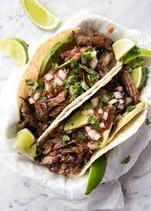

Carnitas Tacos

Description
The pressure cooker makes this meal easy by taking an inexpensive cut of meat and turning into a super tender base for your tacos. I usually get a 3lb pork roast from the store because its always available. But you can use any roast as long as you adjust cooking times for a different size.
Once the meat is prepared, you can top with as many taco ingredients as you like, or simply a squirt of lime juice, the possibilites are endless! Is it Tuesday yet? :)
Ingredients
- 3 lbs Pork Shoulder
- Street Taco tortillas
- 3 tbs agave
- Juice of 1 orange
- 1/2 onion
- 6 cloves peeled garlic
- 1 tsp salt
- 1 tsp black pepper
- 1.5 tsp chili powder
- toppings of your choosing: avocado slices, cheese, salsa, tomato, etc.
Steps
- Place pork in pressure cooker and add orange juice, seasonings, and onion. Close lid and cook for 20 minutes on high.
- Release pressure valve when cooking is complete.
- Shred pork using silicone tongs.
- Set cooker to simmer and cook for 10 minutes or until liquid in pot is reduced
- Add agave, and close crisping lid. Cook for 7 minutes on broil.
- Put carnitas into the tortillas and top with your favorite taco toppers!